Every number can see something.
Sightline is a pure-deduction puzzle game where numbers tell you how many bombs they can see.
Every puzzle has a logical solution. No guessing. No luck. Just deduction.
One rule. Read it in seconds.
Not what is next to it. What it can see: the whole line, until something blocks it.
The board above is the final state of a four-step example: a revealed tile shows edge numbers; a number counts the bombs visible along its line; a second tile that sees nothing rules out its whole row, which pins the bomb; every safe tile is revealed.
The board changes. The rule doesn’t.
Clips from the real game. Each feature and mechanic is highlighted below.
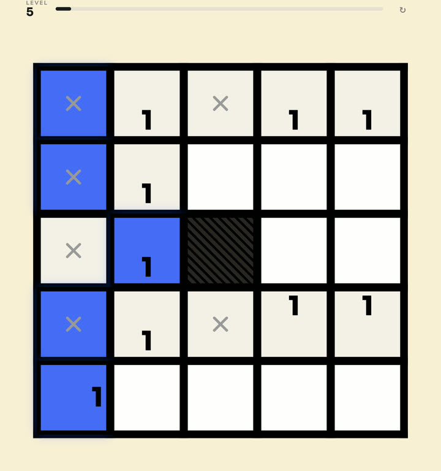
Sightlines stop dead at a wall and cannot see past it.
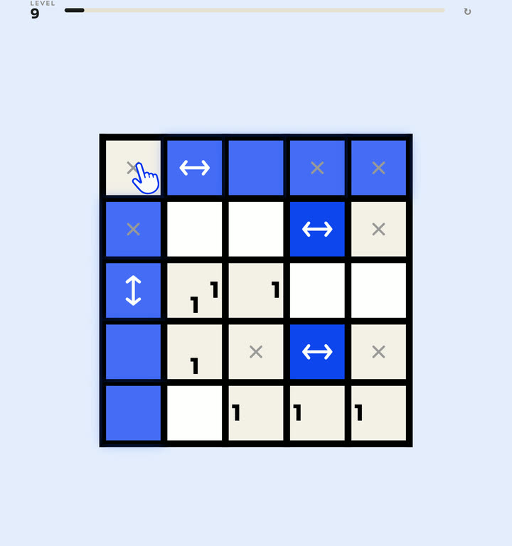
A window: sight passes through the way its arrows point, and is blocked across them.
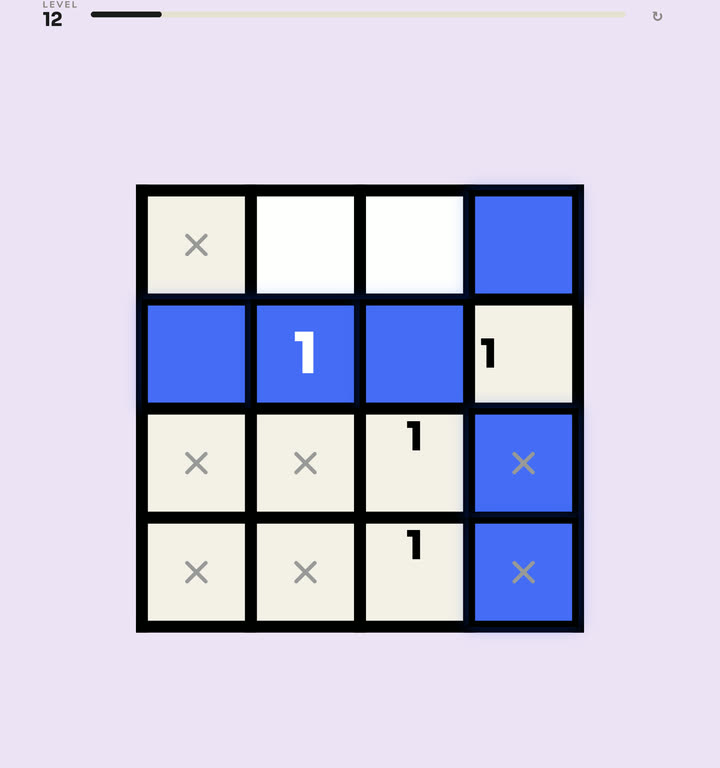
Count the bombs in the eight tiles around them and ignore sightlines entirely.
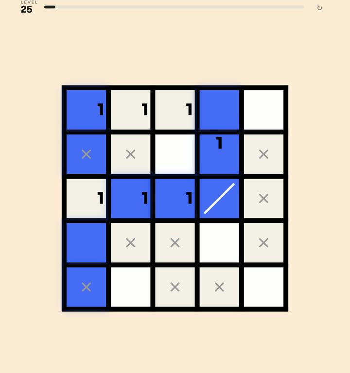
A slanted mirror bends a sightline 90°. Several can curve one line around the whole board.
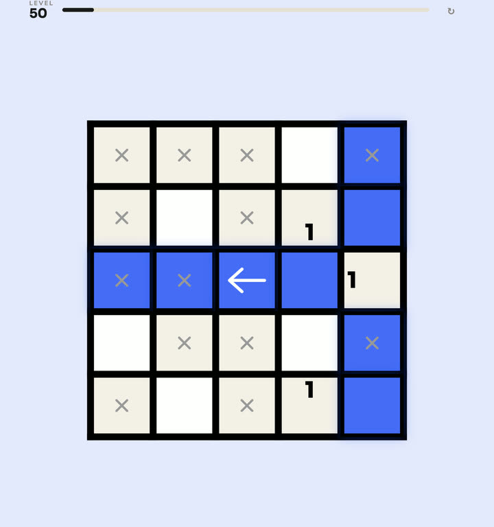
Let a sightline pass only the way the arrow points. Every other direction is blocked like a wall.
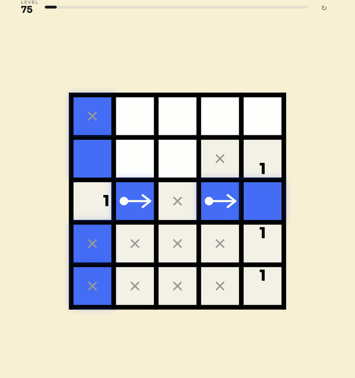
A linked pair: a sightline entering one exits the other, reaching bombs a straight line never could.
The language stays simple. The deductions don’t.
Every puzzle remains logically solvable. All 400 are verified by the solver before they ship.
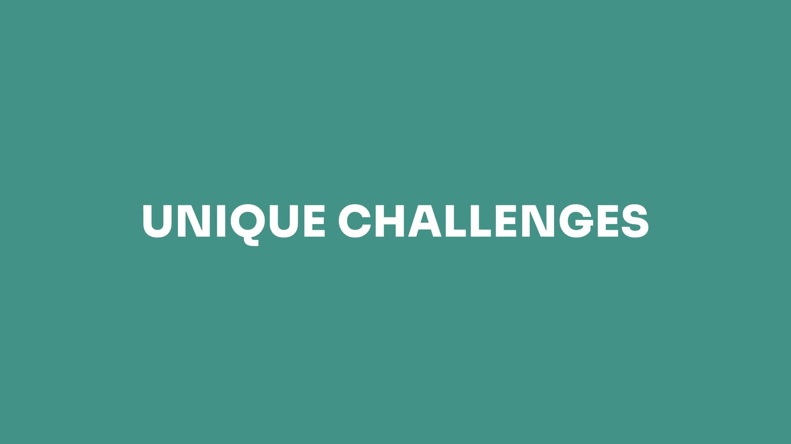
It started with one question.
What if a Minesweeper-style clue didn’t tell you what was immediately around it, but instead told you what it could see?
The result was a visual rule that takes seconds to understand but opens a surprisingly large space for unique gameplay.
I love games where complexity emerges from a small number of consistent rules rather than continually adding exceptions, and Sightline grew naturally from that idea.
— Yoni, designer
One game. Every screen. One save.
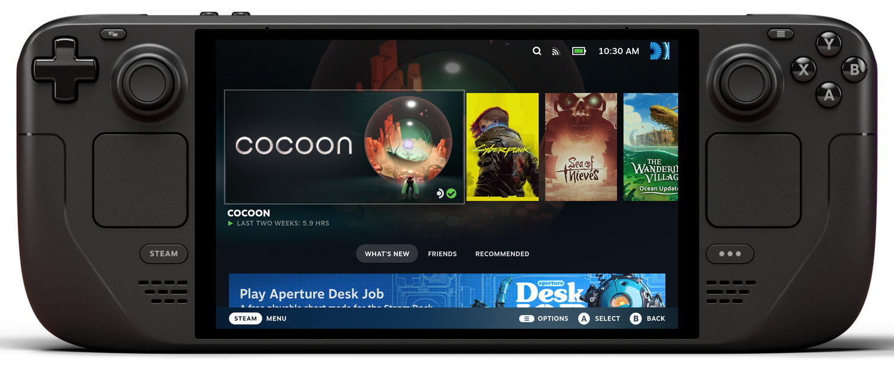
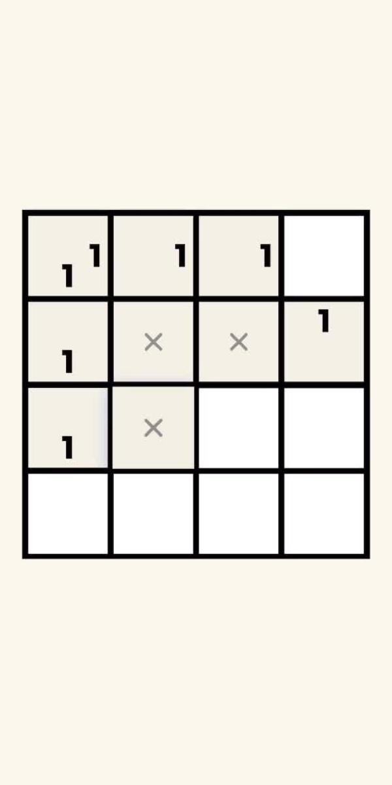
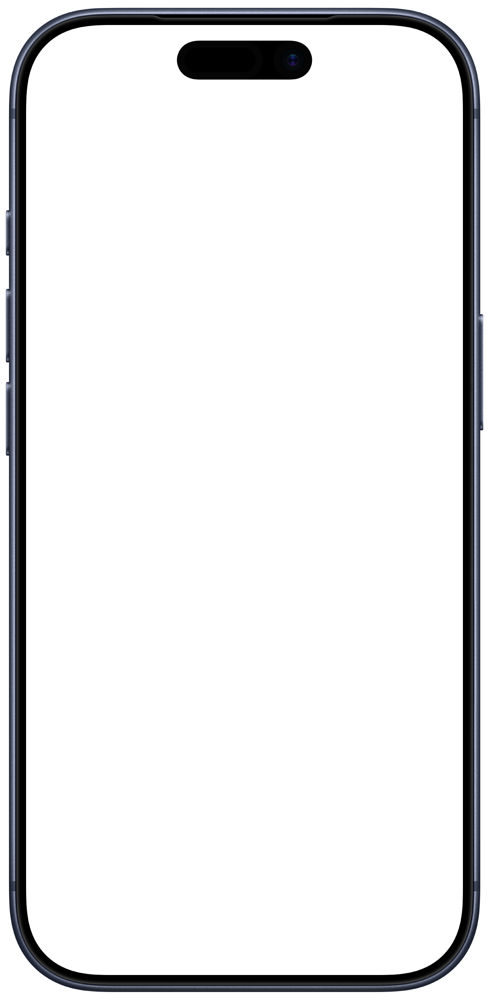
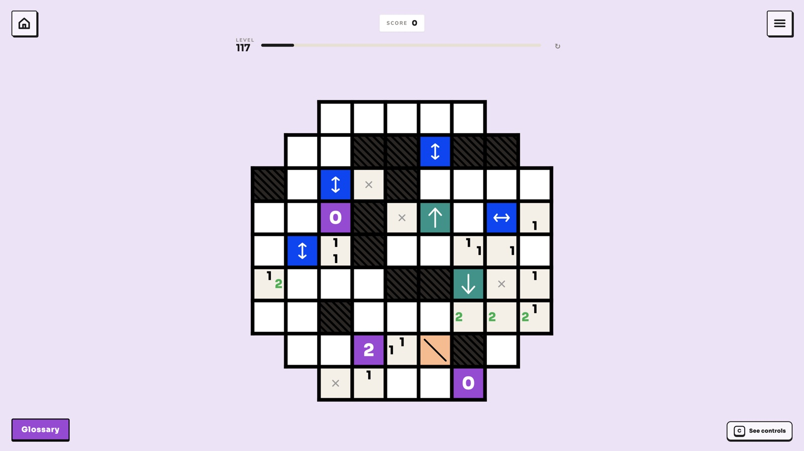
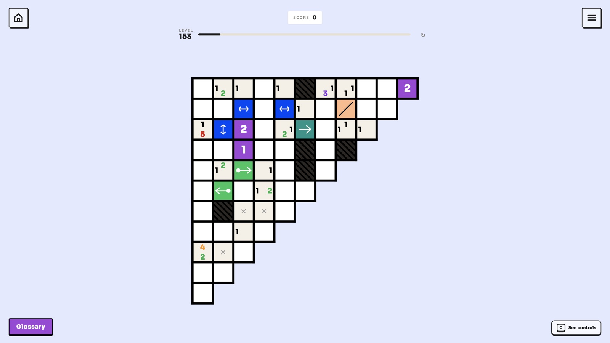
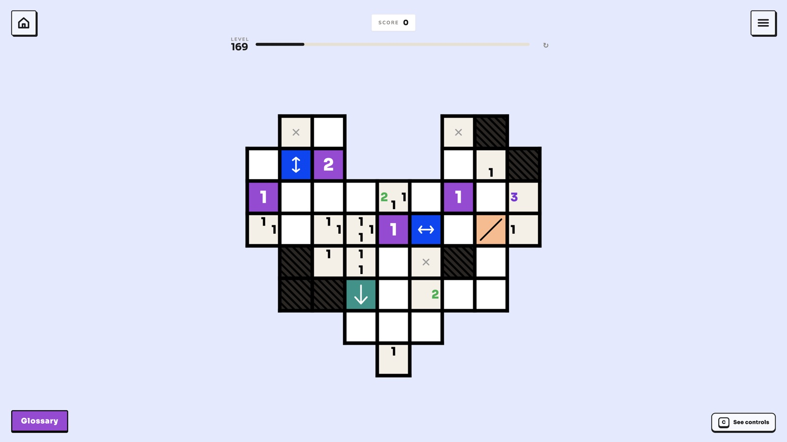
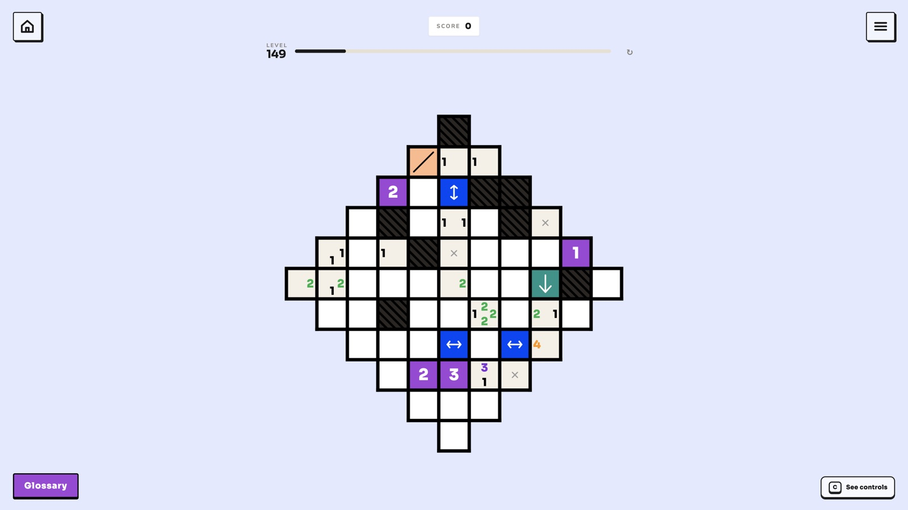
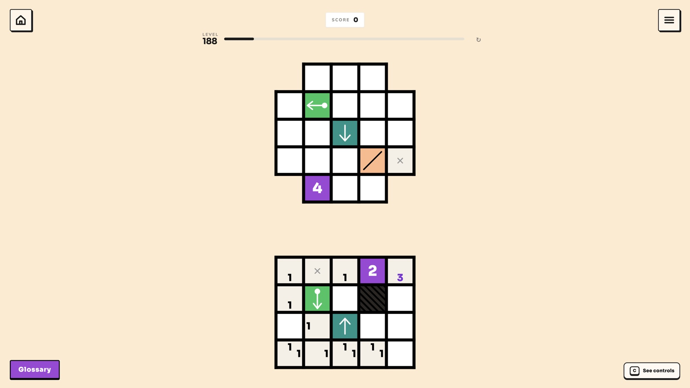
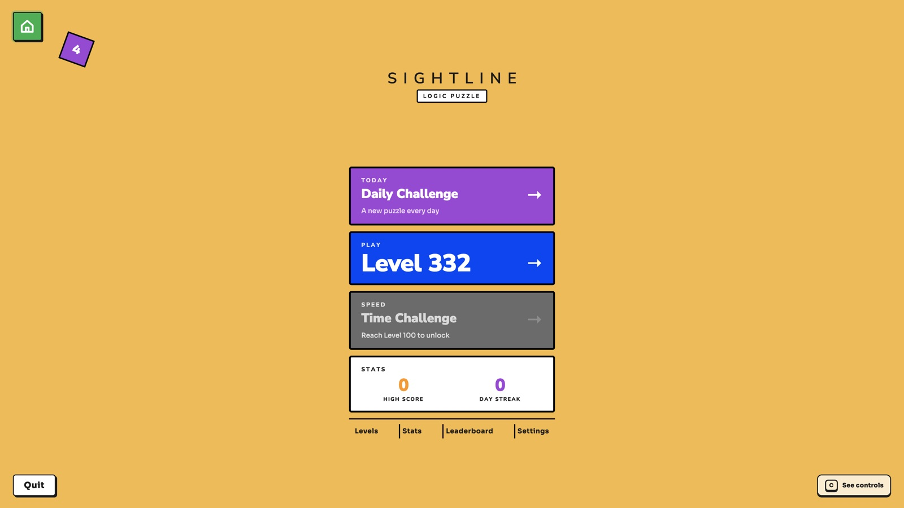


Built. Tested. Not yet launched.
Sightline’s core development has been self-funded and is substantially complete. It is currently in final polish, platform preparation and release preparation.
Sightline has undergone extensive testing across macOS, Steam, Steam Deck, iOS and Android, including:
- Core gameplay
- Progression
- Saving
- Cross-device progression
- Cross-save
- Global leaderboards
- Online functionality
- Platform-specific UI and input
Sightline is substantially complete, cross-platform and extensively tested — but its public marketing launch is still ahead of it.
The store pages, builds, achievements and trailer exist today. What hasn’t happened yet is the part a partner changes most.
The game exists. The audience is still to be built.
Sightline has not yet had a meaningful public marketing campaign, and it does not yet have an established audience.
This leaves its reveal, audience-building campaign, creator outreach, press strategy and broader launch opportunity largely untouched.
Yumloop.
The company
Yumloop is a new independent games company founded by Yoni, a former Rockstar designer. Sightline is Yumloop’s first release.
Yumloop is being built as a long-term independent games company focused on original games with strong, immediately understandable mechanical identities.
Yoni · Founder / Designer
Former Rockstar designer, with credits on Grand Theft Auto V, Red Dead Redemption 2 and Grand Theft Auto VI. Based in Scotland.
Designed and built Sightline across every platform above, solo.
A real first audience, then a studio that lasts.
Immediately
Give Sightline the strongest possible launch across mobile and PC, establish its first meaningful audience, and explore the right console opportunities.
Longer term
Establish Sightline as Yumloop’s first successful release and build Yumloop into a sustainable independent studio capable of continuing to create and release original games.
I’m looking for a partner who can make the opportunity bigger.
Sightline’s core development has already been self-funded and is substantially complete, so I’m not primarily seeking financing to turn a prototype into a finished game.
I’m looking for a publishing partner who can materially increase Sightline’s potential through:
I’m not looking for a publisher simply to put another logo on Sightline. I’m looking for a partner whose involvement can meaningfully change its trajectory.
Ready to move quickly.
Target launch: Q4 2026 — flexible with publishing strategy.
Sightline’s advanced development state means it can move toward release quickly.
The final launch date has not been publicly committed and remains flexible enough to accommodate the right announcement, marketing and platform strategy with a publishing partner.
Why I’m writing to you.
I’m approaching publishers with a track record of bringing mechanically distinctive independent games to market, and treating a clear idea as the asset rather than the scope.
Sightline isn’t a game whose value comes from enormous production scope. Its strength is a simple central idea that creates significantly more depth than it initially appears to.
I’m looking for a partner that sees that simplicity as a strength and can help communicate it to a much larger audience.
Sightline first. Yumloop alongside.
I’m seeking a publishing partnership around Sightline while building Yumloop as an independent long-term games company.
I’m very open to building an ongoing relationship with the right publishing partner where it makes sense.
Every number can see something.
Sightline is substantially complete and available to play now. I’d love to hear what you think.